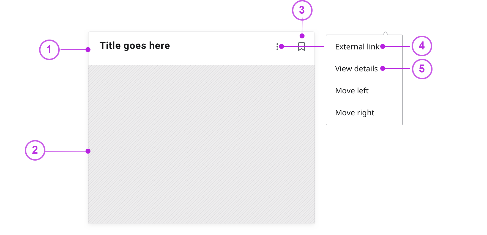
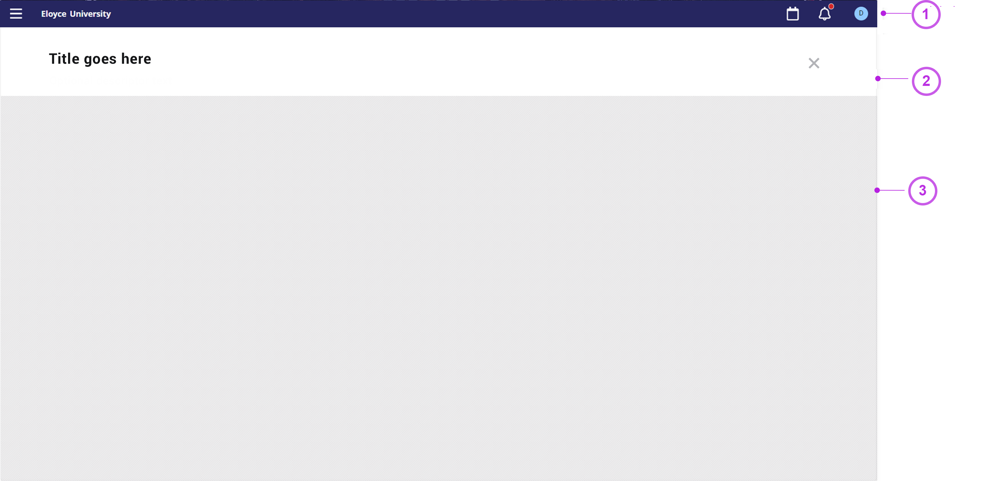

Add content using the Experience SDK
The Ellucian Experience Software Development Kit (SDK) provides the ability to extend Ellucian Experience by creating extensions that include your own content. Developers create extensions using the Experience SDK, and Experience administrators manage those extensions in the Extension Management area of Ellucian Experience Setup.
The Experience SDK is available with Experience Premium.
- Command line tools for generating and deploying extensions.
- React APIs that enable extensions to integrate with Experience.
- A GraphQL Proxy that provides access to Ethos data stored in Ellucian Ethos Data Access.
About the Experience SDK
Extensions
An extension is a package that extends Ellucian Experience to provide additional content to end users, beyond that delivered with Ellucian Experience.
Developers create extensions using the Experience SDK and deliver the compiled extension to Experience administrators by uploading the extension to an Experience account.
- GraphQL queries that Experience uses to retrieve Ethos data by making GraphQL requests to Ellucian Ethos Data Access. This is data that you loaded into Data Access from an Ethos authoritative source such as Banner or Colleague.
- Custom configuration fields that Experience administrators use to customize the extension’s behavior in each Experience environment where the extension is deployed.
Cards
A card is a small, independent piece of functionality displayed on the Ellucian Experience dashboard. Cards can be interactive or purely informational.
Extensions are responsible for rendering the main body of their cards. The header of a card is controlled by Experience with limited input from the extension.

- Card header, owned by Ellucian Experience
- Content area, owned by extension contributor
- Save/Unsave
- Admin can add and name external link in Configuration
- Goes to Page view (if applicable)
Design considerations
Ellucian Experience expects the body of each card to be a React component based on the Ellucian Path™ Design System. This React component will be inserted directly into the DOM of the Experience dashboard. This means that all cards exist in the same browser frame and are not isolated from each other. Ellucian strongly recommends that you implement cards using JSS for styling to avoid conflicts with styles from other extensions and to leverage dynamic theme variables. Cards must avoid modifying any global objects, values, or prototypes. In assessing security considerations, cards must be aware that other extensions may have violated this rule.
Pages
Pages provide an immersive content experience to users.
Users access a page from an associated card by clicking or tapping on the card. Developers can also set up deep links to specific pages, offering direct access to users. Because pages use the entire Experience content area, you can provide more information and features than is possible in a card.
- The standard Experience global navigation at the top of the page.
- A page header with the title.
- The content area.
The extension developer controls the content area, while Ellucian Experience controls the global navigation and page header.

- Global navigation, owned by Ellucian Experience
- Page header, owned by Ellucian Experience
- Content area, owned by extension contributor
Dependency bundles
Experience SDK extensions rely on a set of library dependencies that include React, the Ellucian Path™ Design System, and libraries that support internationalization.
At runtime, Ellucian Experience loads these dependencies in a performance-optimized manner and provides instances of them to each card. This approach avoids the severe performance problems that could result if multiple copies of these large dependencies were independently loaded by, or bundled into, each card.
Each release of the Experience SDK defines a bundle of dependencies and dependency versions. With each release, the set of dependencies in this bundle, and the versions of those dependencies, might change. Extension developers should aim to keep their extensions up-to-date with the latest version of the Experience SDK and these shared dependencies. However, because it is not practical to completely synchronize the release schedules of all extensions with the Experience release schedule, Ellucian provides a mechanism to enable older extensions to continue using the dependency versions on which they were built. In each extension's package.json file, the reference to the Experience SDK includes a version tag. This version tag is used by Experience to determine which dependencies need to be loaded and provided to the extension at runtime.
Refer to the attached spreadsheet for information about which dependencies are associated with each version of the Experience SDK. To download that spreadsheet, click  Attachment on this page.
Attachment on this page.
Internationalization support
It is important that everything shown in Experience uses the same locale for translation and internationalization.
To enable this, the instances of moment and react-intl provided to extensions are preconfigured for the user's locale as determined by Experience. In cases where other libraries are used for internationalization, the locale that should be used is provided to extensions through React props.
Design guidance
A successful Experience extension makes it easy for users to navigate through your content with minimal effort, enabling them to quickly digest need-to-know information and guiding them to interact with your content. These user experience (UX) guidelines outline requirements and recommendations to help achieve that.
Cards
Cards includes a header, which is a standard component handled by Ellucian Experience, and a content area whose content and design you specify in the extension. Card content should be a simple, concise, snapshot of information with very light interactions. More detailed content and complex interactions should live only in a page or external URL.
Cards that contain only simple information can have content that exceeds the height of the content area. Experience will make the content area scrollable.
- Controls—for example, a check box, an option button, or toggle switch.
- Links—to navigate to an external systems in a new browser tab.
- Buttons—secondary only, use sparingly.
- Text entry—for example, ability to initiate a search. Use sparingly.
- Static content—click or tapping this area can open the page associated with the card.
Pages
A page includes a header that is handled by Ellucian Experience, and a content area whose content and design you specify in the extension. Pages are displayed on their own, occupying the entire screen with the exception of the global navigation bar and the page title.
- If a page offers other navigation, present those sub-sections as tabs.
- If a page requires drill-down views, it should replace the main page content and provide the user with the ability to get back to the previous screen using a back icon.
- If a modal dialog is present, it should overlay the entire screen including the global navigation area.
Theme
In the Configuration area of Ellucian Experience, administrators can customize the global theme that applies to the entire Experience user interface. To maintain a consistent look and feel for the content in a particular dashboard, make sure that your extension content leverages theme values, in particular the primary, secondary, and button/link colors specified in the theme.
When you create new content using the Experience SDK’s templates, the content will automatically be set up to work with Ellucian Path™ Design System components in a theme-aware manner. Any custom components that you create in the extension that are not constructed of Ellucian Path Design System components should likewise make use of the theming information received in the themeInfo object present in props.
{
...,
themeInfo: {
dashboardBackgroundColor: "#FFF",
primaryColor: "#FF0000",
secondaryColor: "#51ABFF",
ctaColors: {
active: "#4D4640",
base: "#72665B",
hover: "#5F564E",
tint: "#F8F7F7"
}
},
...
}themeInfo values to any custom components. For example:- Use the
themeInfo.ctaColorsfor rendering clickable elements such as buttons, check boxes, and option buttons. - Use the
themeInfo.primaryColoras the main background for page headers. - Use the
secondaryColoras the focus indicator for active tabs, and as the accent on a visually accented card.
Ellucian Path Design System
Ellucian Experience leverages the Ellucian Path™ Design System to ensure a consistent, cohesive design and high-quality user experience. The Ellucian Path Design System is a collection of reusable UI components guided by clear standards and detailed developer documentation. Built with React, the UI components are based on a modular architecture with encapsulated styles for ease of use and maintenance. For documentation, see The Ellucian Path Design System.
- The extension does not need to implement
EDSApplicationas stated in the Getting Started for Developers section of the Ellucian Path Design System documentation, because cards will be rendered within anEDSApplicationcomponent managed by Experience. - To properly load inside of Experience, you must use the withStyles API, and not the makeStyles API.
Where hyperlinks open
HTML hyperlinks defined within an <a> tag can contain an optional target attribute that specifies where the hyperlinked site will open. If you do not specify the target attribute, the Experience default behavior applies - the site opens in a new tab. Note that this is different from the standard browser default to open the site in the same tab.
Install Node.js
Install Node.js on the computer where you will be using the Experience SDK.
The required version of Node.js depends on the SDK version of the extension you are working with:
| SDK version of the extension | Required Node.js version |
|---|---|
| SDK 5.2.0 or earlier | 14.15.x |
| SDK 5.3.1 through 5.7.0 | 14.18.3 |
| SDK 5.8.0 through 7.3.0 | 16.15.0 |
| SDK 7.4.0 through 7.13.0 | 18.16.1 |
| SDK 7.14.0 through 8.0.1 | 20.18.1 |
| SDK 8.1.2 or later | 24.13.0 |
Although later versions of Node.js are available, you should use the specified versions as they have been tested with the SDK.
Ellucian recommends that you use a tool such as Node Version Manager, which you can use initially to install multiple versions of Node.js and later to switch to the appropriate version for the extension you are working with.
Create an extension
Create the extension in which you will create your custom content.
Procedure
Files in the extension directory
When you run the create-experience-extension command to create an extension, it automatically creates the folders and files that the extension needs.
| File | Description |
|---|---|
| eslint.config.mjs | Defines rules that ESLint uses to scan your code for potential issues |
| extension.js | Contains definitions of the configuration parameters and cards for the extension. |
| package.json | Contains the build and deploy scripts, and specifies the versions of dependencies. |
| readme.md | Detailed information about the files in the extension directory and the extension manifest created when an extension is uploaded to Experience. |
| sample.env | A template that you can use in creating your own .env file for the extension. |
| webpack.config.js | Controls the build and upload process for your extension. You would typically leave this file unchanged, but you can customize it for advanced use cases. |
| src/cards/<extension_name>.jsx | Card definition that you can use as a starting point for your card. |
| src/page/ | Folder containing .jsx files that you can use as a starting point for your page. |
Add content to an extension
Sample content
Ellucian has created a sample extension with example cards and pages that you can use for reference when creating your own cards and pages. The extension is named sdk-samples, and is available from the publicly-accessible SDK samples repository in Github: https://github.com/ellucian-developer/experience-sdk-sample-extensions.
Sample cards
The sdk-samples extension in Github includes sample cards, each of which demonstrates one or more features that you might want to include in your own cards. See the table below for a brief description of each sample card. For details, see the readme.md file within that sample extension.
| Card | Capabilities illustrated by this sample card |
|---|---|
| GraphQLQueryCard | Retrieving data from Ellucian Ethos Data Access through Ethos using GraphQL queries. A card definition can be a single .jsx file or a folder of files. This card is an example of using a folder for the card definition. |
| CacheCard | Using local cache to store data for the card. |
| CardConfigurationCard | Defining configuration properties that Experience administrators will specify when setting up the card in the Configuration area of Experience. This sample card illustrates both client-side and server-side configuration, at both the extension level and the card level. |
| DrilldownCard | Navigation from a card to a detail view and back to the main view, while maintaining state. |
| ErrorMessageCard | Allows the extension developer to modify error message properties within the card, and view the result. |
| LoadingStateCard | Shows what is displayed while a card is in a loading state. |
| PreventRemoveCard | Setting up a card to conditionally prevent users from removing it. |
| PropsCard | Provides the extension developer with the full list of properties passed to the extension. This example card points to a page that displays the list of properties. |
| ThrowErrorCard | Shows how Experience will behave when a card throws an exception. |
Add a card to an extension
Each card has its own folder or .jsx file in the src/cards directory, and its own section in the extension.js file.
Procedure
-
In the extension.js file, in the
cardssection, create a card definition for each card that you want to have within the extension.The extension.js file includes a sample card definition.
Element Description type Enter a unique key, with no spaces, to identify the type of the card. Do not change this value after uploading the extension to environments. The following characters are not permitted and will cause a build failure:
-
% -
/ -
\ \t(horizontal tab)\n(linefeed or new line)\r(carriage return)\b(backspace)
To avoid build failures caused by non-permitted characters, Ellucian recommends that you use only alphanumerics, underscore, dash, period, and @.
source Enter "./src/cards/<your_card_filename>" title1 Default title of this card. In each environment, an administrator can change this title in the Details section of the card setup page. displayCardType1 Card type displayed in the table of cards on the Card Management page in Ellucian Experience. description1 Default description of this card. In each environment, an administrator can change this description in the Details section of the card setup page. miniCardIcon (Optional) Default icon to be used on small viewports where cards are displayed as mini cards that can be expanded to view content. Select the icon that best represents this card's content. For the available icons, click Attachment on this page to download the table of Experience icons. Enter the value from the Path Design System Name column in that table.In each environment, an administrator can accept this default icon, or select a different icon, in the Details section of the card setup page.
category (Optional) Default category for this card, used to help users search and browse cards available to them. The category must be one of those listed in the table below. In each environment, an administrator can accept this default category, or select a different category, in the Details section of the card setup page.
The table below shows the default category label for each value of the
categoryattribute. Administrators at your institution might have changed those labels. To see the label at your institution that corresponds to each default label, go to the Configuration area of the Experience dashboard (requires Main Menu permission), click the Main Menu tab, and then click EDIT CATEGORIES. Note that changing the label does not change the permitted values listed in the table below for thecategoryattribute.pageRoute If this card will route to a page, this section is required. Later, when you set up the page, you will define this section as described in Card/page interaction examples. If this card will not route to a page, do not include this section.
Table 1. Permitted values for the category attribute Permitted value Default category label academics Academics community Community myaccount My Account insights Reporting work Work -
Card attributes for multiple locales
You can specify multiple values for card title, type, and description, to support different locales.
Experience supports multiple locales, as described in Supported locales and languages. The user's locale is based on the language selected on the Experience profile page or in browser settings.
- Specify a single value seen by all Experience users, irrespective of their selected language. Example for card title:
"title": "Class Schedule", - Specify multiple values for different locales. Example for card title:
title: { "en-US": "Class Schedule", "es": "Horario de clase" }In this example:- A user whose language was set to English (USA) would see the
en-USvalue (Class Schedule). - A user whose language was set to Español would see the
esvalue (Horario de clase). - A user whose language was set to any other language would see the
en-USvalue (Class Schedule), which is the fallback default.
- A user whose language was set to English (USA) would see the
- You can include any locale supported by Experience, as listed in the table below. Enter the value exactly as shown in the table, including upper/lower case.
- You must include the
en-USlocale as a fallback default. - If you specify a value for
es, Experience users will see that value if they select as their language either Español or a country-specific version such as Español (CO).
| Locale | Language |
|---|---|
| en-US | English (USA) |
| en-GB | English (UK) |
| en-AU | English (AU) |
| es | Español |
| fr-CA | Français (CA) |
| ar | Arabic |
Add a page to an extension
You can add a page to an extension. The page has a definition in the src/page directory and a section in the extension.js file.
About this task
When you use the create-experience-extension command to create an extension, the new extension includes a sample page definition in the src/page/ folder. You will create your page by modifying the files in that folder.
When you create an extension with a card and page, an Experience user would typically access the page from that card on their dashboard. Roles are assigned to cards in Card Management, and only users with those roles would see the card on their dashboards. However, any Experience user with the page URL can access the page. Card roles do not limit access to the page. You will need to use API endpoint security to ensure that any actions available from the page are limited to appropriate users.
Procedure
Styling example for a full width page
If you remove the default left/right padding on an extension page by setting the fullWidth attribute to true, be sure to account for mobile viewports in your styling. See the example below.
import { useWidth, isWidthDown, makeStyles } from '@ellucian/react-design-system/core';
import { spacing40 } from '@ellucian/react-design-system/core/styles/tokens';
const useStyles = makeStyles(() => ({
page: {
margin: `0 ${spacing40}`
},
pageSmall: {
margin: 0
}
}));
const ExtensionPage = () => {
const classes = useStyles();
const width = useWidth();
const wrapperClass = isWidthDown('md', width) ? classes.pageSmall : classes.page;
return (
<div className={wrapperClass}>
...
</div>
);
};Card/page interaction examples
You can specify how users will access the page from the card. For example, you can specify that clicking/tapping anywhere in the card will open the page, or that clicking/tapping specific buttons or links will open the page.
Access the page from anywhere in the card
You can define a page route that causes the page to open when a user clicks or taps anywhere in the card. Hovering over the card body changes the mouse cursor from an arrow to a pointed finger to indicate that the card is linked to a page and clickable.
To define a page route, add the pageRoute and route elements to the card definition in the extension.js file:
"cards": [{
"type": "AccountBalanceCard",
"source": "./src/cards/AccountBalanceCard",
"title": "Account Balance",
"displayCardType": "Account Balance Card",
"description": "This card displays your current account balance",
"pageRoute": {
"route": "/"
}
}],
page: {
source: "./src/page/index.jsx"
}To specify that clicking anywhere in the card will go to a specific view of the page, define the path in the route element:
"route": "/transactions"Access the page from a button or link in the card
You can create a button or link in the card that opens the page, by adding the button or link in the .jsx file for the card:
const AccountBalanceCard = props => {
const { classes, cardControl: { navigateToPage } } = props;
return (
<div className={classes.card}>
<Button id='viewButton' className={classes.navigationButton} onClick={navigateToPage}>View account transaction history</Button>
</div>
)
}To specify that clicking that button will go to a specific view of the page, define the path:
<Button id='viewButton' className={classes.navigationButton} onClick={() => navigateToPage({route: '/transactions/charges/2020-07'})}>View last month's charges</Button>Access the page from anywhere in the card except for certain buttons or links
You can specify that clicking anywhere in the card will open the page, except for specific buttons or links. To achieve that, you would define those buttons or links in the .jsx file for the card, as described above, and then specify in the extension.js file that those elements should be excluded from opening the page in response to clicking or tapping:
"pageRoute": {
"route": "/",
"excludeClickSelectors": ['#viewButton']
}Define configuration parameters for an extension
You can define configuration parameters that the extension content (cards and page) uses to retrieve data or perform other operations. Experience administrators enter values for these parameters in the Configuration section of the card setup page, when setting up the extension cards in the Card Management section of Ellucian Experience.
Basic and custom configuration
- Basic parameters are text fields. Supported types are date, boolean, url, text, and password. Basic parameters are available at both the extension and card levels.
- With a custom configuration, you can define a user interface for the Configuration section of the card setup page, including not only those basic parameters but also advanced parameters such as drop-down lists, multi-value parameters, and check boxes. Custom configuration is available only at the card level; it is not available at the extension level.
Extension-level and card-level parameters
- Extension-level parameters apply to all content (cards and page) in the extension. Extension-level parameters appear in the Configuration section of the card setup page for all of the cards. The administrator needs to enter extension-level settings just one time, in any of those cards. The entered values will then automatically appear in the Configuration section for the other cards.
- Card-level parameters apply to only one card.
Client-side and server-side parameters
- Server-side parameters are settings that are not required to render the user interface. Server-side configuration values are held by the server component of the extension and are not available in the browser. Examples include an API URL and the credentials for accessing that API.
Parameters whose values need to be protected must be defined as server-side parameters.
- Client-side parameters are settings whose values need to be available to render the user interface. Client-side configuration values are passed to the browser in the card’s configuration data. For example, the Housing Request card provide by Ellucian includes a client-side parameter for Housing application deadline date. That date is displayed in the card to inform Experience users of the deadline date.
Define basic configuration parameters
Basic parameters are text fields. Supported types are date, boolean, url, text, and password. Basic parameters are available at both the extension and card levels.
About this task
sdk-samples extension in Github includes examples of all of the configuration parameter types (extension-level and card-level, and client-side and server-side).Procedure
What to do next
- You can reference client-side configuration parameters from your cards or pages using props. For more information, see Card props and hooks available in the SDK and Page props and hooks available in the SDK.
- You can reference server-side configuration parameters from your server-side code as shown in Server-side code: node.js example.
Define a custom configuration
With a custom configuration, you can define a user interface for the Configurations section of the card setup page, including advanced parameters such as drop-down lists, multi-value parameters, and check boxes. Custom configuration is available only at the card level; it is not available at the extension level.
Procedure
What to do next
- You can reference client-side custom configuration parameters from your cards using props. For more information, see the
cardInfo.configuration.customConfigurationattribute in Card props and hooks available in the SDK. - You can reference server-side custom configuration parameters from your server-side code as shown in Server-side code: node.js example.
Custom configuration props
You can use these props in the definition of your custom configuration.
| Prop | Attribute | Type | Description |
|---|---|---|---|
| cache | getItem | function({key: string, scope: string, options: {expireTime: milliseconds, session: boolean[false]}}) | Fetch cached data from browser for unique key, for the current authenticated user. |
| storeItem | function({key: string, data: any, scope: string, options: {session: boolean[false]}}): | Store data to browser's cache for unique key, for the current authenticated user. | |
| removeItem | function({key: string, scope: string, options: {session: boolean[false]}}) | Clear data from browser's cache for unique key, for the current authenticated user. | |
| clear | function({scope: string, options: {session: boolean[false]}}) | Clear data from browser's cache for entire extension for current user. | |
| cardControl | setCustomConfiguration | function({ customConfiguration: { client: { // client-side configuration}, server: { // server-side configuration } } }); | Call this function from the custom configuration component to save the custom configuration values. This function accepts only one parameter as object. |
| setErrorMessage | function({headerMessage, textMessage, iconName, iconColor}) | Function to display a specified message to the user, with an icon from the Ellucian Path™ Design System icon library. | |
| setIsCustomConfigurationValid | function(boolean, number) | Call this function to set the validity of the custom configuration form. This function accepts two parameters:
If the form is not valid, then the create card process will not allow the values to be stored. |
|
| setLoadingStatus | function(boolean) | Function to display a loading status indicator when data is being fetched. Set to false when the card is ready to be rendered. |
|
| cardInfo | configuration:
|
Object | Client-side and server-side basic configuration settings for this card and extension. Experience administrators enter values for these settings in the Configuration section of the card setup page, when setting up the card in the Card Management section of Ellucian Experience. For information about defining the configuration settings referenced here, see Define basic configuration parameters. |
configuration.customConfiguration:
|
Object | Client-side and server-side custom configuration settings for this card and extension. Experience administrators enter values for these settings in the Configuration section of the card setup page, when setting up the card in the Card Management section of Ellucian Experience. For information about defining the configuration settings referenced here, see Define a custom configuration. |
|
| extensionId | String | Unique ID for this extension. | |
| externalLinkUrl | String | The external link URL specified in the Details step of card configuration. | |
| externalLinkLabel | String | The external link label specified in the Details step of card configuration. | |
| dashboardInfo | version | String | Experience version in which this extension is running. |
| erpType | String | ERP type for the tenant used to access Experience. Its value can be null if the ERP cannot be determined for the institution.Permitted values:
|
|
| region | String | AWS region in which the current instance of Experience is running. Permitted values:
|
|
| stage | String | Experience environment (Test or Production). The stage value is for the same region as the region value. Permitted values:
|
|
| data | getExtensionJwt | function() | Returns a JWT signed with your extension's shared secret. Includes userId that can be trusted by custom APIs. |
| extensionInfo | configuration | Object | Extension level client-side configuration data for the card and extension. |
| themeInfo | ctaColors | Object |
Color values for Experience. Based on values that Experience administrators specify on the Theming tab in Ellucian Experience Configuration in the dashboard. Use these values in building custom UI components. These values are automatically applied to components in the Ellucian Path Design System. For more information about using colors, see the Color Guidelines section of the Ellucian Path Design System documentation. |
| dashboardBackgroundColor | String | ||
| primaryColor | String | ||
| secondaryColor | String | ||
| userInfo | firstName | String | First name of the current user. |
| roles | Array() | Roles assigned to this user in Ellucian Experience, including both identity provider roles and Ethos roles. | |
| locale | String | Locale of the current user For the locales supported with Experience content delivered by Ellucian, see Supported locales and languages. |
|
| dir | String | Text direction, based on the locale. Value is either ltr (left-to-right) or rtl (right-to-left). |
|
| tenantId | String | ID of the tenant in the Ellucian cloud for your institution. |
Example: Experience SDK custom configuration file
To create a custom configuration for a card created using the Experience SDK, you create a .jsx component that defines the user interface for the custom configuration. See below for an example .jsx file followed by a recommended best practice to report "field required" errors on mount.
import React, { useEffect } from 'react';
import PropTypes from 'prop-types';
import { TextField} from '@ellucian/react-design-system/core';
import { withIntl } from '../utils/ReactIntlProviderWrapper';
const MarkdownTemplateConfig = (props) => {
const {
cardControl: {
setCustomConfiguration,
setIsCustomConfigurationValid
},
cardInfo: {
configuration: {
customConfiguration
}
}
} = props;
const validColors = ['orange', 'black', 'red', 'green', 'blue'];
const client = customConfiguration ? customConfiguration.client : undefined;
const [markdown, setMarkdown] = React.useState(client ? client.markdown : '');
const [color, setColor] = React.useState(client ? client.color : '');
const [markdownError, setMarkdownError] = React.useState(false);
const [colorError, setColorError] = React.useState(false);
// do an initial validation when the custom configuration first mounts; this is to catch
// required-field errors, which wouldn't otherwise appear until the required fields are
// interacted with
useEffect(() => {
updateCustomConfigVerification();
// eslint-disable-next-line react-hooks/exhaustive-deps
}, []);
// update the custom configuration whenever any values change
useEffect(() => {
updateCustomConfig();
// eslint-disable-next-line react-hooks/exhaustive-deps
}, [markdown, color]);
const handleCommentsChange = e => {
const { value } = e.target;
setMarkdown(value);
};
const handleColorChange = e => {
const { value } = e.target;
setColor(value);
};
const updateCustomConfig = () => {
setCustomConfiguration({
customConfiguration: {
client: {
markdown: markdown,
color: color
}
}
});
};
// verify all custom config fields
const updateCustomConfigVerification = () => {
let errorCount = 0;
let invalidColor = false;
// markdown text is required
if (markdown === undefined || markdown.length === 0) {
errorCount++;
}
// if a color was entered, make sure it's valid
if (color !== undefined && color.length > 0 && !validColors.includes(color)) {
errorCount++;
invalidColor = true;
}
// update individual field error states
setMarkdownError(markdown === undefined || markdown.length === 0);
setColorError(invalidColor);
// register validation errors: whether there's an error, and how many errors there are
setIsCustomConfigurationValid(errorCount === 0, errorCount);
};
return (
<React.Fragment>
<TextField
label="Comments"
margin="normal"
required
multiline
name="multiline"
onBlur={updateCustomConfigVerification}
onChange={handleCommentsChange}
placeholder={props.intl.formatMessage({ id: 'MarkdownTemplate-markdown-placeholder' })}
value={markdown}
fullWidth
error={markdownError}
/>
<br/>
<TextField
label="Text Color"
margin="normal"
name="color"
onBlur={updateCustomConfigVerification}
onChange={handleColorChange}
placeholder={props.intl.formatMessage({ id: 'MarkdownTemplate-color-placeholder' })}
helperText={props.intl.formatMessage({ id: 'MarkdownTemplate-valid-colors' }, {colors: validColors.join(', ')})}
value={color}
fullWidth
error={colorError}
/>
</React.Fragment>
);
};
MarkdownTemplateConfig.propTypes = {
cardControl: PropTypes.object,
cardInfo: PropTypes.object,
intl: PropTypes.object
};
export default withIntl(MarkdownTemplateConfig);Report "field required" errors on mount
By default, Path's required input fields are configured to only show errors on blur; that is, a user must enter and then exit a required field, without providing a value, in order for an error to appear. Because the card setup process relies entirely on the custom configuration itself to report validation errors, this might cause the card setup process to miss required errors, if the user doesn't visit those fields. Ellucian recommends that developers register these errors immediately on mount, with a one-time useEffect:
useEffect(() => {
updateCustomConfigVerification();
}, [updateCustomConfigVerification]);
const updateCustomConfigVerification = () => {
let errorCount = 0;
// markdown text is required
if (markdown === undefined || markdown.length === 0) {
errorCount++;
}
// register validation errors: whether there's an error, and how many errors there are
setIsCustomConfigurationValid(errorCount === 0, errorCount);
};Define GraphQL requests to get data from Data Access
Ellucian Experience can retrieve data through Ethos by making GraphQL requests to Ellucian Ethos Data Access. The following is a high-level procedure with references to where you can find detailed information.
Procedure
Ethos GraphQL Proxy
Ellucian Experience includes an Ethos GraphQL Proxy that enables extensions to securely query Ethos data from client-side JavaScript code.
When a web app needs to retrieve data from Ethos, a web service must act as a proxy between the client-side JavaScript code and the Ethos APIs. Because calls to the Ethos API perform authorization for each application rather than for each user, this web service must securely determine the user's identity and restrict the query to only information that this user should be able to access. The Ethos GraphQL Proxy provided by the Experience SDK serves as a generic web service that provides that capability, so that extensions are not required to develop their own web service to work with Ethos.
To use the GraphQL Proxy, queries for an extension are defined in the extension's manifest. The extension's client-side code invokes these queries by name. The definition of these queries are stored and processed server-side where they cannot be viewed or modified by end users.
The queries usually contain parameters so that different data can be returned depending on the user, the extension's configuration, or other dynamic non-sensitive values the extension determines client-side.
Query variables
GraphQL queries defined for Ellucian Experience extensions typically take several variables to provide dynamic results that are specific to the current user, what that user is looking at, and extension configuration settings.
The Ethos GraphQL Proxy will automatically provide the variables listed below to all queries.
| Parameter name | Description |
|---|---|
| userErpId | The ID of the current user as represented in their authoritative ERP. |
| personId | The GUID for the Ethos Person entity for the current user. |
| Dynamic configuration values that you define at the extension level in the extension.js file. | Custom server-side configuration values set by an administrator for the extension making the GraphQL request. |
| Dynamic configuration values that you define at the card level in the extension.js file. | Custom server-side configuration values set by an administrator for the card making the GraphQL request. |
| Dynamic values provided when invoking the Ethos GraphQL Proxy. | Additional variables may be specified by the client-side code when invoking the Ethos GraphQL Proxy. For security, this should only be used for non-sensitive purposes such as paging, sorting, or applying additional filters beyond those based on the other variables listed above. |
If there are naming conflicts between the dynamically-generated variables, those listed first in this table take precedence. In other words, variables sent from the browser cannot override variables that have been set by an administrator through server-side configuration.
See the GraphQL specification for variables to learn about defining and leveraging parameterized queries.
Restrictions on person-based GraphQL queries
These restrictions protect the security of personal data.
For Ethos data models that are person-based, queries must use a personId query variable and corresponding filter criteria. For an example, see the housingRequest query in Resource versions. That example query includes both the ($personId: ID) query variable and the {person}: { id: {EQ: $personId} filter criteria. When you upload the extension to Ellucian Experience, the upload will fail if any of the queries in the extension do not satisfy this requirement.
$personId query variable cannot be used in the following scenarios:- In an expression with anything other than an EQ operator. For example, the following expression will cause the upload to fail:
filter: { {person}: { id:{ NEQ: $personId } } } - Within an OR expression. For example, the following expression will cause the upload to fail:
filter: { OR: { {person}: { id: { EQ: $personId }} {room}: { id: { EQ: "65946c46-82a2-4fc7-a903-19e417acc8cd"}} } }
Resource versions
GraphQL queries specify the resources on which they operate. In the Ethos Data Model, resource types have version numbers specified in the GraphQL query.
For example the query below specifies version 6 of the buildings resource.
"queries": {
"list-buildings": [
{
"query": "{
buildings: buildings6 {
edges {
node {
id
title
}
}
}
}"
}
]
}Automatic Version Selection
In most cases, extensions are able to work with many different versions of each resource type. This could be achieved by defining a separate query for each supported combination of resource versions. The Ethos GraphQL Proxy provides an alternative approach that allows an extension to declare ranges of supported resource versions. The GraphQL Proxy compares the resource versions available on the current tenant to the ranges specified by a query and then inserts the correct resource type names.
Here is an alternative and more flexible way of defining the above query. In this version, the line buildings: buildings6 has been replaced with a placeholder: buildings: {buildings}. The placeholder is dynamically populated using the constraints specified in the resourceVersions definition of "buildings": {min: 6, max: 11}. If the tenant running this query has a version of the buildings resource type available between 6 and 11 (inclusive), the placeholder is populated and the query succeeds. If the tenant does not have a compatible version of the buildings resource type, the GraphQL Proxy returns an error.
"queries": {
"list-buildings": [
{
"resourceVersions": {
"buildings": {min: 6, max: 11},
},
"query": "{
buildings: {buildings} {
edges {
node {
id
title
}
}
}
}"
}
]
}Multiple constraints can be listed in resourceVersions, and in cases where there is a low risk of breaking changes in future resource type versions, the max constraint can be omitted:
"resourceVersions": {
"academicPeriods": {min: 16},
"housingAssignments": {min: 10},
"housingRequests": {min: 10},
"persons": {min: 6},
"rooms": {min: 6}
}Alternate Query Definitions
Sometimes, changes in resource versions requires substantive changes to the GraphQL query. In these cases, multiple versions of named query can be defined with different resourceVersions constraints. For example:
"queries": {
"list-buildings": [
{ # Version 1 of the list-buildings query
"resourceVersions": {
"buildings": {min: 6},
},
"query": "{
buildings: {buildings} {
# ...
}
}"
},
{ # Version 2 of the list-buildings query with tighter constraints.
"resourceVersions": {
"buildings": {min: 1, max: 5},
},
"query": "{
buildings: {buildings} {
# ...
}
}"
}
]
}When multiple versions of a named query are defined, the GraphQL Proxy uses the first one in the array that is compatible with the resource versions available on the current tenant. For this reason, queries should be sorted with the newest one being first. When invoking a named query with multiple versions defined, the extension's client-side code must be written to handle all possible response data structures.
Automatic Singularization
Within resourceVersions, all entries are expressed in their plural form: buildings instead of building, persons instead of person, and so on. In the body of the query, however, the singular form is often needed when referring to a single entity rather than a collection. The Ethos GraphQL Proxy will automatically identify the singular form of the resource type and populate placeholder values in the query accordingly. In the example below, a constraint is defined for persons (plural) while the query includes a placeholder for {person} (singular). The GraphQL Proxy will correctly resolve that placeholder by using the compatible version number taken from persons.
"queries": {
"housingRequest": [
{
"resourceVersions": {
"housingRequests": {min: 10},
"persons": {min: 6}, # <--- Constraint defined in plural form
},
"query":
"query getHousingRequest($personId: ID, $periods: [String]){
housingRequests : {housingRequests}(
filter: {
{person}: { # <--- Singular form, automatically handled
id: {EQ: $personId}
},
# ...Alternative Type Names
Sometimes, the data type of a linked entity in a GraphQL response will not match the name of the underlying Ethos resource type. For example, housingAssignment.request is an attribute of type housingRequest## where ## is the version number taken from housingRequests. The GraphQL Proxy can handle this scenario with a special syntax for the placeholder:
{ typeName @ resourceToTakeVersionFrom}In the housing request example, a query could be defined as:
"queries": {
"housingRequest": [
{
"resourceVersions": {
"housingRequests": {min: 10}, # <--- Constraint for housingRequests
"persons": {min: 6},
},
"query":
"query getHousingRequest($personId: ID){
housingRequests : {housingRequests}(
filter: {
{person}: {
id: {EQ: $personId}
},
edges {
node {
request : {request@housingRequests} { # <---- Alternative type name using version number from housingRequests
id
}
status
# ...Securely invoke APIs from your extensions
There are multiple ways to securely call the APIs in your system from an extension.
| Approach | Reference | Comments |
|---|---|---|
| Call Banner Business Process APIs (BPAPIs) on behalf of a Banner administrator. | Invoke BPAPIs through the Ethos proxy service using OAuth tokens | With these methods, you can securely call the APIs in your system without creating a microservice and hosting middleware to act as an authorization proxy. |
| Create Data Connect serverless APIs and call them from an Experience extension. | Develop serverless APIs | |
| Use a JSON web token (JWT) to securely retrieve data through your custom API. | Get data through your custom API |
Invoke BPAPIs through the Ethos proxy service using OAuth tokens
You can use the authenticatedEthosFetch function to call Banner Business Process APIs (BPAPIs) directly, without having to create and invoke a microservice that uses the Ethos API keys as an intermediary.
Limitation
Use this method only for extension content that is restricted to Experience users who have permission to access the Banner Admin UI. The authenticatedEthosFetch wrapper generates a token with a user context, which includes the Ethos personId and roles for the user. The token is carried through the integration proxy service to the BPAPI endpoint and used for authentication. Users who have permission to access the Banner Admin UI implicitly have permission to access the BPAPI. A user without permission to access the Banner Admin UI who attempts to view an extension which uses the authenticatedEthosFetch wrapper to view a BPAPI resource will get a 403/unauthorized browser error.
You can restrict the content, for example, by creating an Experience role for users with permission to access the Banner Admin UI, and then assigning that role to the extension card.
Extensions that need to expose BPAPI resources to any user, including users with no permissions in Banner Admin, should use a microservice intermediary.
Prerequisite
To invoke the BPAPIs using OAuth, you must first Configure OAuth for Banner Business Process APIs.
Create the platform component
- In Ethos Integration, access the tenant environment (Test or Production) corresponding to the Experience environment where you are working. Click the Platform Components tab and look for the Ellucian Experience tile. If that tile exists, you are done. If that tile does not exist, continue to the next step.
- In Experience Setup, on the Dashboard Setup tab, click Validate. This will create the platform component in Ethos Integration.
Using the authenticatedEthosFetch wrapper in your extension to call OAuth-protected ethos resources
The authenticatedEthosFetch wrapper function is a prop/hook that makes it easy to fetch resources that are protected by OAuth user tokens. It follows the Mozilla specification for native fetch as described in fetch() global function, but instead of a complete url, the first parameter is the resource name encoded with any other url parameters you would normally include in the request.
- To use the prop/hook, follow the instructions in Use props and hooks to interact with the Experience dashboard for importing the hook or destructuring the prop.
- To determine the first parameter to pass into
authenticatedEthosFetch, extract the resource and everything after it from the url you would have used for nativefetch.For example: The full URL to request persons information from a BPAPI using the integrate proxy service would look something like this:
https://integrate.elluciancloud.com/api/general-person-identification?id=A00000521. The first parameter ofauthenticatedEthosFetchwill just be the last part of this url:general-person-identification?id=A00000521representing the resource and the resource's url parameter. - The second parameter, as with native
fetch, are the options. Those options follow the Mozilla specification for the fetch() global function. authenticatedEthosFetch, like nativefetch, is an asynchronous function that needs to be called in the context of a callback or promise, or using await syntax.
Sample code
This code sample contains all necessary code for invoking the BPAPI using the integration proxy. The extension does not have to get a bearer token first, nor does it have to store/know the integration url. The authenticatedEthosFetch wrapper takes care of those things.
import { useData } from '@ellucian/experience-extension-utils';
const HomePage = (props) => {
const { authenticatedEthosFetch } = useData();
// Could also be:
// const { data: { authenticatedEthosFetch } } = props;
const [mydata, setData] = useState();
useEffect(() => {
fetchData();
}, []);
const fetchData = () => {
const args =
{
options: {
headers: {
Accept: 'application/vnd.hedtech.integration.v1.0.0+json'
}
},
resource: 'general-person-identification?id=A00000521'
}
authenticatedEthosFetch(args.resource, args.options)
.then((response) => response.json())
.then((data) => {
setData(data);
});
}
// ...Get data through your custom API
Ellucian Experience can retrieve data through your custom API to display in an Experience card or page. For example, you might develop a card that needs to securely retrieve data about the current Experience user.
Ellucian Experience uses a JSON web token (JWT) to securely retrieve data through your custom API. The JWT assures the API that the request comes from a trusted source. It contains information about your Experience tenant, the current Experience user, and the extension and card requesting the information.
- Your card or page requests a JWT from Ellucian Experience.
- Experience returns a short-lived JWT containing information about the tenant, user, and card. This JWT is securely generated and signed on the Experience server using your shared secret.
- Your card or page sends a request to your custom API for data about this user. The request includes the JWT.
- Your custom API validates that the JWT is signed with your secret, parses it to get the tenant/user/card information, and then retrieves that user's data and returns it to the card or page for display on the Experience dashboard.
- In Extension Management, create a shared secret and API token for the extension that contains the card or page. Your server-side API code will use these values to validate the token and retrieve server-side configuration settings from Experience.
- In the .jsx file for your card or page, enter the client-side code required to retrieve the JWT and pass it to the custom API.
- In the server-side code for your API, enter the code required to validate the JWT, parse the JWT to extract the tenant/user/card information, retrieve any server-side configuration settings you have defined for the extension or card, retrieve the required data for the user, and return that data to the card or page.
Create a shared secret and API token for the extension
Your custom API will use the shared secret to validate the JWT, and the API token to retrieve server-side configuration settings that you defined for the card and extension.
About this task
- Follow the procedure below to create the shared secret and API token from the Extension Management area of Experience Setup.
- Define the shared secret and API token using environment variables when you build and upload the extension, using the procedure in Build and upload an extension. If you use that method, you can skip this procedure.
Procedure
-
Locate the extension that you are working with, and click the Edit Extension
 icon in that row.
icon in that row.
-
Click the Edit Extension icon again to re-open the Edit Extension Version dialog box.
Keep this dialog box open. You will copy the API token from here and paste it into your server-side code.
Update your extension code to use a JWT
In your extension, add the code required to retrieve the JWT from Ellucian Experience and pass it to your custom API.
Include code like the example below in the .jsx file for your card or page. This example retrieves the JWT from Ellucian Experience and passes it to your custom API in an authorization header. Because the JWT is short-lived, you should include the code to retrieve the JWT for each call to a custom API.
In this example, you would need to define CUSTOM_API_URL earlier in your code, setting it to the URL for your custom API.
async function invokeCustomApi(payload) {
const jwt = await props.data.getExtensionJwt();
const response = await fetch(CUSTOM_API_URL, {
method: 'POST',
credentials: 'include',
headers: {
'Content-Type': 'application/json',
'Authorization': 'Bearer ' + jwt
},
body: JSON.stringify(payload)
});
};
Update your server-side code to work with your extension
In your server-side code, add the code required to validate and parse the JWT, retrieve any server-side configuration settings that you defined for this extension, and then retrieve the data for the current user and return it to Ellucian Experience.
See the server-side code examples provided here for node.js and ASP.NET.
Server-side code: node.js example
If you are using node.js for your custom API server-side code, include code like this example to work with your Experience extension.
- Code used to validate the JWT received from your card or extension.
- Code used to parse the JWT. You can use any JWT parsing library for this purpose.
- Code used to retrieve server-side configuration parameters that you defined for this extension or card as described in Define configuration parameters for an extension.
- Placeholders for code that uses the server-side configuration parameters and the data in the JWT to retrieve the information needed by the card or page.
Replace PUT YOUR SECRET HERE and PUT YOUR API TOKEN HERE with the shared secret and API token. You can get the API token from the Edit Extension Version dialog box in Extension Management, or from the upload response if you generated the API token using the procedure in Build and upload an extension. (If desired, you can instead read these values from an environment variable or configuration file.)
const jwt = require('jsonwebtoken');
const cors = require('cors');
const fetch = require('node-fetch');
const bodyParser = require('body-parser')
const JWT_SECRET = 'PUT YOUR SECRET HERE';
const EXPERIENCE_API_TOKEN = 'PUT YOUR API TOKEN HERE';
function authenticate(req, res, next) {
const authHeader = req.headers.authorization;
const token = authHeader && authHeader.split(' ')[1];
if (token == null) return res.sendStatus(401); // if there isn't any token
jwt.verify(token, JWT_SECRET, (err, verified) => {
if (err) {
console.log(err);
return res.sendStatus(403);
}
req.tenant = verified.tenant;
req.user = verified.user;
req.card = verified.card;
next();
});
}
app.use(cors({
origin: origin: [ 'https://experience.elluciancloud.com', 'https://experience-test.elluciancloud.com' ],
credentials: true,
allowedHeaders: ['Authorization', 'Content-Type'] }));
app.use(authenticate);
app.use(bodyParser.json());
app.post('/', async (req, res) => {
const settingsResponse = await fetch(req.card.cardServerConfigurationApiUrl, {
credentials: 'include',
headers: {
'Authorization': `Bearer ${EXPERIENCE_API_TOKEN}`
}
});
if (!settingsResponse.ok) {
console.error(`Error retrieving settings: ${settingsResponse.status} ${settingsResponse.statusText}}`)
return res.sendStatus(500);
}
const settings = await settingsResponse.json();
// Do stuff with settings (will contain attributes matching the names of server-side config fields)
// Do stuff with req.user.id, req.user.erpId, etcServer-side code: ASP.NET example
If you are using ASP.NET for your custom API server-side code, include code like this example to work with your Experience extension.
First, add code like that shown below to your server-side code. This will look at each incoming request, ensure it has a valid JWT, parse the contents of that JWT, and store them in the HttpContext for that request. If anything goes wrong, an HTTP 401 is returned.
Replace PUT YOUR SECRET HERE and PUT YOUR API TOKEN HERE with the shared secret and API token. You can get the API token from the Edit Extension Version dialog box in Extension Management, or from the upload response if you generated the API token using the procedure in Build and upload an extension. (If desired, you can instead read these values from an environment variable or configuration file.)
using System;
using System.IdentityModel.Tokens.Jwt;
using System.Text;
using System.Text.Json;
using Microsoft.AspNetCore.Builder;
using Microsoft.Extensions.Primitives;
using Microsoft.IdentityModel.Tokens;
using System.Linq;
using System.Diagnostics;
using Microsoft.AspNetCore.Http;
namespace Experience {
public class ExperienceJwtTenant {
public string Id { get; set; }
}
public class ExperienceJwtUser {
public string Id { get; set; }
public string ErpId { get; set; }
public string[] Roles { get; set; }
}
public class ExperienceJwtCard {
public string Id { get; set; }
public string ExtensionId { get; set; }
public string CardServerConfigurationApiUrl { get; set; }
}
public static class ExperienceMiddleware
{
const string JWT_SECRET = "PUT YOUR SECRET HERE";
const string EXPERIENCE_API_TOKEN = "PUT YOUR API TOKEN HERE";
private static bool ValidateToken(string token, HttpContext context)
{
var key = new SymmetricSecurityKey(Encoding.ASCII.GetBytes(JWT_SECRET));
var tokenHandler = new JwtSecurityTokenHandler();
try
{
tokenHandler.ValidateToken(token, new TokenValidationParameters
{
ValidAlgorithms = new[] { "HS256" },
ValidateIssuerSigningKey = true,
IssuerSigningKey = key,
ValidateLifetime = true,
ValidateIssuer = false,
ValidateAudience = false
}, out SecurityToken validatedToken);
var securityToken = tokenHandler.ReadToken(token) as JwtSecurityToken;
var jsonOptions = new JsonSerializerOptions { PropertyNamingPolicy = JsonNamingPolicy.CamelCase };
var claims= securityToken.Claims.ToDictionary(c => c.Type);
context.Items.Add("tenant", JsonSerializer.Deserialize<ExperienceJwtTenant>(claims["tenant"].Value, jsonOptions));
context.Items.Add("user", JsonSerializer.Deserialize<ExperienceJwtUser>(claims["user"].Value, jsonOptions));
context.Items.Add("card", JsonSerializer.Deserialize<ExperienceJwtCard>(claims["card"].Value, jsonOptions));
}
catch (Exception ex)
{
Debug.WriteLine("Token validation failed due to exception: " + ex.ToString());
return false;
}
return true;
}
public static IApplicationBuilder UseExperience(this IApplicationBuilder app) {
app.Use(async (context, next) =>
{
// pull the auth token out of the header
if (context.Request.Headers.TryGetValue("Authorization", out StringValues authHeader))
{
var token = authHeader[0]?.Split(' ')?[1];
if(!String.IsNullOrEmpty(token)) {
// validate and parse the token before proceeding
var valid = ValidateToken(token, context);
if(valid) {
await next();
return;
}
}
}
// if we got here, simply return a 401 error
context.Response.StatusCode = 401;
});
return app;
}
}
}
Next, in Startup.cs, add the following code to configure CORS because the API calls will be coming from JS code served by Experience. You can add other domains to WithOrigins() as needed.
public void ConfigureServices(IServiceCollection services)
{
services.AddCors(options => options.AddDefaultPolicy(builder =>
{
builder
.WithOrigins("https://experience.elluciancloud.com", "https://experience-test.elluciancloud.com")
.AllowCredentials()
.WithHeaders("Authorization", "Content-Type");
}));
}Also in Startup.cs, add the following code to enable the middleware from above:
public void Configure(IApplicationBuilder app, IWebHostEnvironment env) {
// ...
app.UseCors();
app.UseExperience(); // Add middleware which will validate JWT, and put the values from it in the request context.
// ...
} Finally, in your API implementation you can retrieve the JWT contents and trust their values:
var tenant = context.Items["tenant"] as ExperienceJwtTenant;
var user = context.Items["user"] as ExperienceJwtUser;
var card = context.Items["card"] as ExperienceJwtCard;
// To retrieve server-side config values, make a request to card.CardServerConfigurationUrl with the Authorization set to "Bearer " + EXPERIENCE_API_TOKENJWT content
When your custom card requests a JWT, Ellucian Experience returns a JWT with claims that contain information about the tenant, user, and card.
Values in the JWT
| Value | Description |
|---|---|
| tenant.id | ID of the tenant in the Ellucian cloud for your institution. |
| user.id | The GUID for the Ethos Person entity for the current user. |
| user.erpId | ID for the current user from the identity provider erpId claim. |
| user.roles | Roles assigned to this user in Ellucian Experience, including both identity provider roles and Ethos roles.. |
| card.id | Unique ID for this card in the Ellucian Experience cloud. |
| card.extensionId | Unique ID for this extension in the Ellucian Experience cloud. |
| card.cardServerConfigurationApiUrl | URL that your custom API will use to retrieve any server-side configuration values that you have defined for this extension or card. |
JWT example
{
"tenant": {
"id": "efda4d34-c3c0-4ade-a6ed-c9fc2013159f"
},
"user": {
"id": "83a8623f-6a73-4dbf-b2b6-7093505654e1",
"erpId": "A00038404",
"roles": [
"student"
]
},
"card": {
"id": "<<string generated by Experience>>",
"extensionId": "132136bf-438b-44dd-9848-5dcf8e1ae75c",
"cardServerConfigurationApiUrl": "https://experience.elluciancloud.com/dynamically-generated-url"
},
"iat": 1597101678,
"exp": 1597102038,
"iss": "Ellucian Experience Dashboard",
"sub": "83a8623f-6a73-4dbf-b2b6-7093505654e1"
}Use props and hooks to interact with the Experience dashboard
Extension cards and pages can get information from the Experience dashboard, and interact with the dashboard, using React props and hooks.
Props
Attributes are passed down to extensions from the parent Experience dashboard as props. These include informational attributes, such as card identifier, user name, and theme information; and functions that can be invoked to interact with the enclosing dashboard environment, such as closePage and setLoadingStatus.
Example of a cache prop from the Cache sample card (CacheCard.jsx) in the sdk-samples extension in Github:
import { useIntl } from 'react-intl';
...
const CacheCard = (props) => {
const { classes, cache: { getItem, storeItem, removeItem }} = props;
const intl = useIntl();
The Properties sample card in the sdk-samples extension in Github shows all top-level available props as a card and page.
Hooks
For extensions written as functional components, the props are also available as React hooks. Hooks provide an alternate mechanism to get the same data. The same cache example, using hooks instead of props:
import { useCache } from '@ellucian/experience-extension-utils';
import { useIntl } from 'react-intl';
...
const CacheCard = (props) => {
const { classes } = props;
const { getItem, storeItem, removeItem } = useCache();
const intl = useIntl();
Note that the use of hooks requires importing the extension utilities file using a command like the first line in the example above: import { useCache } from '@ellucian/experience-extension-utils';
The advantage of hooks is that they can be invoked anywhere in the hierarchy of your extension. If, for example, you have a page component that consists of multiple subcomponents, each of those subcomponents can use hooks to get extension attributes, no matter how deep they are in the component hierarchy. With props, it is necessary to pass the relevant data down through that hierarchy, component to component, to access their values.
More information
The topics after this one provide details about each available prop, hook, and attribute for cards and pages, and provide examples of using both props and hooks.
Card props and hooks available in the SDK
Extension cards can get information from the Experience dashboard, and interact with the dashboard, using React props and hooks. Hooks can be imported from @ellucian/experience-extension-utils.
| Prop/Hook | Attribute | Description |
|---|---|---|
Prop: dashboardInfoHook: |
version | Experience version in which this extension is running. |
| erpType | ERP type for the tenant used to access Experience. Its value can be null if the ERP cannot be determined for the institution.Permitted values:
|
|
| region | AWS region in which the current instance of Experience is running. Permitted values:
|
|
| stage | Experience environment (Test or Production). The stage value is for the same region as the region value. Permitted values:
|
|
Prop: cardInfo Hook: |
cardId | Unique ID for this card. |
| configuration | Client-side basic configuration settings for this card and extension. Experience administrators enter values for these settings in the Configuration section of the card setup page, when setting up the card in the Card Management section of Ellucian Experience. For information about defining the configuration settings referenced here, see Define basic configuration parameters. |
|
| configuration.customConfiguration | Client-side custom configuration settings for this card and extension. Experience administrators enter values for these settings in the Configuration section of the card setup page, when setting up the card in the Card Management section of Ellucian Experience. For information about defining the configuration settings referenced here, see Define a custom configuration. |
|
| extensionId | Unique ID for this extension. | |
| externalLinkUrl | The external link URL specified in the Details step of card configuration. | |
| externalLinkLabel | The external link label specified in the Details step of card configuration. | |
Prop: cardControl Hook: |
drilldown: function( onCloseFunction function, alternativeTitle string} ) | Function to navigate to a drilldown state to show details on based on the user's selection in the card. For an example, see the src/cards/DrilldownCard.jsx sample file in the sdk-samples extension in Github. |
| resetDrilldown: function() | Function to use the API, rather than the user clicking on the back arrow, to go from the drilldown state back to the card. | |
| setErrorMessage: function({headerMessage, textMessage, iconName, iconColor}) | Function to display a specified message to the user, with an icon from the Ellucian Path™ Design System icon library. | |
| setLoadingStatus: function(boolean) | Function to display a loading status indicator when data is being fetched. Set to false when the card is ready to be rendered. |
|
| setPreventRemove: function(boolean) | Pass true to this function to prevent end users from removing this card from their dashboard. |
|
| setPreventRemoveMessage: function(string) | A string passed to this function will be displayed in a tooltip when a user hovers over the disabled save/unsave icon. | |
| navigateToPage({route: string, extension: {accountId: string, tenant: string, publisher: string, extensionName: string, type: string }, replace: boolean, state: object}) | Supply a custom route to be appended at the end of the page route. Used to help identify the action that triggered the launching of the page. The
accountId, publisher, extensionName and type properties should relate to the extension you want to navigate to.
Include the optional Include the optional |
|
| getUrlToPage({route: string, extension: {accountId: string, publisher: string, extensionName: string, type: string }); | Returns the relative path to a page, calculated by the provided extension and route arguments. The
accountId, publisher, extensionName and type properties should relate to the extension you want to build the url for.
|
|
| setCustomConfiguration | Call this function from the custom configuration component to save the custom configuration values. This function accepts only one parameter as object. The shape of the object should be as below: |
|
| setIsCustomConfigurationValid | Call this function to set the validity of the custom configuration form. This function accepts two parameters:
If the form is not valid, then the create card process will not allow the values to be stored. |
|
Prop: userInfo Hook: |
firstName | First name of the current user. |
| roles | Roles assigned to this user in Ellucian Experience, including both identity provider roles and Ethos roles. | |
| locale | Locale of the current user For the locales supported with Experience content delivered by Ellucian, see Supported locales and languages. |
|
| dir | Text direction, based on the locale. Value is either ltr (left-to-right) or rtl (right-to-left). |
|
| tenantId | ID of the tenant in the Ellucian cloud for your institution. | |
| tenantAlias | Alias of the tenant in the Ellucian cloud for your institution. | |
Prop: themeInfoHook: |
dashboardBackgroundColor primaryColor secondaryColor ctaColors.active ctaColors.base ctaColors.hover ctaColors.tint |
Color values for Experience. Based on values that Experience administrators specify on the Theming tab in Ellucian Experience Configuration in the dashboard. Use these values in building custom UI components. These values are automatically applied to components in the Ellucian Path Design System. For more information about using colors, see the Color Guidelines section of the Ellucian Path Design System documentation. |
Prop: data Hook: |
getEthosQuery: async function({queryId: string, properties: {key1: string, key2: string}) | Returns data from Ellucian Ethos Data Access. Pass the id of a named GraphQL query, along with any properties to use as query filters. |
| getEthosQueryResourceVersions: async function() | Returns a list of resources and the versions available. | |
| getExtensionJwt: function() | Returns a JWT signed with your extension's shared secret. Includes userId that can be trusted by custom APIs. | |
| authenticatedEthosFetch(resource: string, options: object) The expected values for the |
Retrieves the Ethos resource using an automatically appended user-scoped OAuth token from approved APIs. See Invoke BPAPIs through the Ethos proxy service using OAuth tokens for an example of using this prop to invoke the Banner Business Process APIs. |
|
Prop: cache Hook: All functions in the |
getItem: function({key: string, scope: string, options: {expireTime: milliseconds, session: boolean[false]}}) | Fetch cached data from browser for unique key, for the current authenticated user. |
| storeItem: function({key: string, data: any, scope: string, options: {session: boolean[false]}}) | Store data to browser's cache for unique key, for the current authenticated user. | |
| removeItem: function({key: string, scope: string, options: {session: boolean[false]}}) | Clear data from browser's cache for unique key, for the current authenticated user. | |
| clear: function({scope: string, options: {session: boolean[false]}}) | Clear data from browser's cache for entire extension for current user. | |
| Prop: none (hook only) Hook: |
extensionId | Unique ID for this extension. |
| type | Page or card | |
| Prop: none (hook only) Hook: |
setErrorMessage: function({headerMessage, textMessage, iconName, iconColor}) | Function to display a specified message to the user, with an icon from the Ellucian Path™ Design System icon library. |
| setLoadingStatus: function(boolean) | Function to display a loading status indicator when data is being fetched. Set to false when the card is ready to be rendered. |
Card props and hooks examples
These examples show similar attributes implemented as props and hooks.
Card props example
{
"classes": {
"card": "jssJ10maSz8Ri1060"
},
"dashboardInfo": {
"version": "1.33.0"
},
"cardInfo": {
"cardId": "Toolkit|Ellucian|Today's%20Classes|PropsCard",
"configuration": {
"customConfiguration": {
"markdown": "# Test markdown"
}
},
"extensionId": "looks-like-a-guid"
},
"userInfo": {
"firstName": "Grace",
"roles": [
"student"
],
"locale": "en-US",
"dir": "ltr",
"tenantId": "looks-like-a-guid",
"agreedToTracking": true
},
"themeInfo": {
"dashboardBackgroundColor": "#5353D1",
"primaryColor": "#5353D1",
"secondaryColor": "#51ABFF",
"ctaColors": {
"active": "#0A4982",
"base": "#026BC8",
"hover": "#065AA5",
"tint": "#F2F8FC"
}
},
"data": {},
"cache": {}
}Card hooks example
useCache {}
useCardInfo {
"cardId": "toolkit|Ellucian|Today's%20Classes|PropsCard",
"configuration": {},
"extensionId": "guid"
}
useData {}
useExtensionControl {}
useExtensionInfo {
"version": "1.33.0"
}
useThemeInfo {
"dashboardBackgroundColor": "#5353D1",
"primaryColor": "#5353D1",
"secondaryColor": "#51ABFF",
"ctaColors": {
"active": "#0A4982",
"base": "#026BC8",
"hover": "#065AA5",
"tint": "#F2F8FC"
}
}
useUserInfo {
"firstName": "Grace",
"roles": [
"student"
],
"locale": "en-US",
"dir": "ltr",
"tenantId": "guid",
"agreedToTracking": true
}
useDashboardInfo {
"version": "1.33.0"
}Page props and hooks available in the SDK
Extension pages can get information from the Experience dashboard, and interact with the dashboard, using React props and hooks. Hooks can be imported from @ellucian/experience-extension-utils.
| Prop/Hook | Attribute | Description |
|---|---|---|
Prop: dashboardInfoHook: |
version | Experience version in which this extension is running. |
| erpType | ERP type for the tenant used to access Experience. Its value can be null if the ERP cannot be determined for the institution.Permitted values:
|
|
| region | AWS region in which the current instance of Experience is running. Permitted values:
|
|
| stage | Experience environment (Test or Production). The stage value is for the same region as the region value. Permitted values:
|
|
Prop: cardInfo Hook: |
cardConfiguration | Client-side, card-level configuration settings for the card that called this page. Experience administrators enter values for these settings in the Configuration section of the card setup page, when setting up the card in the Card Management section of Ellucian Experience. For information about defining the configuration settings referenced here, see Define basic configuration parameters. |
| cardConfiguration.customConfiguration | Client-side, card-level custom configuration settings for the card that called this page. Experience administrators enter values for these settings in the Configuration section of the card setup page, when setting up the card in the Card Management section of Ellucian Experience. For information about defining the configuration settings referenced here, see Define a custom configuration. |
|
| cardId | Unique ID for the card that called this page. | |
Prop: extensionInfoHook: |
configuration | Client-side, extension-level configuration settings for this extension. Experience administrators enter values for these settings in the Configuration section of the card setup page, in the Card Management section of Ellucian Experience, when setting up any card in this extension. For information about defining the configuration settings referenced here, see Define basic configuration parameters. |
| extensionId | Unique ID for this extension. | |
| type (hook only) | Value: card or page |
|
| basePath | The part of a page's URL controlled by Experience. The format may change. Set your JavaScript router component to use this value as its base, so that the router treats all URLs as relative to this base. For example: <browserrouter basename={props.basePath}> |
|
Prop: pageInfoHook: |
basePath | The part of a page’s URL controlled by Experience. The format may change. Set your JavaScript router component to use this value as its base, so the router treats all URLs as relative to this base. For example, <browserrouter basename={props.basePath}> |
Prop: pageControlHook: |
setPageTitle(string) | A string passed to this function will be the title of the page. If this function is not specified, the page title matches the title of the card from which the page was launched. |
| setPageToolbar({primaryCommands: [menuItem],menuCommands: [menuItem]}) See Add items to the page toolbar (setPageToolbar) for the detailed syntax (what is included within each |
Used to add items to the page toolbar. See Add items to the page toolbar (setPageToolbar) for a detailed description. | |
| setErrorMessage: function({headerMessage, textMessage, iconName, iconColor}) | Function to display a specified message to the user, with an icon from the Ellucian Path™ Design System icon library. | |
| setExitPrompt( <boolean>, { dialogTitle: <string>, dialogContent: <string>, saveCallback: <function which returns Promise>}) The second argument is optional. See Warn users of unsaved changes (setExitPrompt) for the detailed syntax and an example. |
Used to warn users when they attempt to navigate away from the page without saving changes. See Warn users of unsaved changes (setExitPrompt) for a detailed description. | |
| setPageClosingCallback(function: Promise) | Accepts a function that is invoked when a user closes a page, allowing the extension to do any necessary cleanup work. See Invoke a function when a user closes a page (setPageClosingCallback) for a detailed description. | |
| setLoadingStatus: function(boolean) | Function to display a loading status indicator when data is being fetched. Set to false when the page is ready to be rendered. | |
| navigateToPage({route: string, extension: {accountId: string, tenant: string, publisher: string, extensionName: string, type: string }, exitPrompt: boolean, replace: boolean, state: object}) | Supply a custom route to be appended at the end of the page route. Used to help identify the action that triggered the launching of the page. Note:
navigateToPage from a page works only when the navigation is to a different extension. To navigate routes within your extension page routes, use useHistory().push(“/myPageRoute”)The
accountId, publisher, extensionName and type properties should relate to the extension you want to navigate to.
Include the optional Include the optional Include the optional |
|
| getUrlToPage({route: string, extension: {accountId: string, publisher: string, extensionName: string, type: string }); | Returns the relative path to a page, calculated by the provided extension and route arguments. The
accountId, publisher, extensionName and type properties should relate to the extension you want to build the url for.
|
|
| closePage | Closes the extension page. | |
Prop: userInfo Hook: |
firstName | First name of the current user. |
| roles | Roles assigned to this user in Ellucian Experience, including both identity provider roles and Ethos roles. | |
| locale | Locale of the current user For the locales supported with Experience content delivered by Ellucian, see Supported locales and languages. |
|
| dir | Text direction, based on the locale. Value is either ltr (left-to-right) or rtl (right-to-left). |
|
| tenantId | ID of the tenant in the Ellucian cloud for your institution. | |
| tenantAlias | Alias of the tenant in the Ellucian cloud for your institution. | |
Prop: themeInfoHook: |
dashboardBackgroundColor primaryColor secondaryColor ctaColors.active ctaColors.base ctaColors.hover ctaColors.tint |
Color values for Experience. Based on values that Experience administrators specify on the Theming tab in Ellucian Experience Configuration in the dashboard. Use these values in building custom UI components. These values are automatically applied to components in the Ellucian Path Design System. For more information about using colors, see the Color Guidelines section of the Ellucian Path Design System documentation. |
Prop: data Hook: |
getEthosQuery: async function({queryId: string, properties: {key1: string, key2: string}) | Returns data from Ellucian Ethos Data Access. Pass the id of a named GraphQL query, along with any properties to use as query filters. |
| getEthosQueryResourceVersions: async function() | Returns a list of resources and the versions available. | |
| getExtensionJwt: function() | Returns a JWT signed with your extension's shared secret. Includes userId that can be trusted by custom APIs. | |
| authenticatedEthosFetch(resource: string, options: object) The expected values for the |
Retrieves the Ethos resource using an automatically appended user-scoped OAuth token from approved APIs. See Invoke BPAPIs through the Ethos proxy service using OAuth tokens for an example of using this prop to invoke the Banner Business Process APIs. |
|
Prop: cache Hook: All functions in the |
getItem: function({key: string, scope: string, options: {expireTime: milliseconds, session: boolean[false]}}) | Fetch cached data from browser for unique key, for the current authenticated user. |
| storeItem: function({key: string, data: any, scope: string, options: {session: boolean[false]}}) | Store data to browser's cache for unique key, for the current authenticated user. | |
| removeItem: function({key: string, scope: string, options: {session: boolean[false]}}) | Clear data from browser's cache for unique key, for the current authenticated user. | |
| clear: function({scope: string, options: {session: boolean[false]}}) | Clear data from browser's cache for entire extension for current user. | |
| Prop: none (hook only) Hook: |
setErrorMessage: function({headerMessage, textMessage, iconName, iconColor}) | Function to display a specified message to the user, with an icon from the Ellucian Path™ Design System icon library. |
| setLoadingStatus: function(boolean) | Function to display a loading status indicator when data is being fetched. Set to false when the page is ready to be rendered. |
Page props and hooks examples
These examples show similar attributes implemented as props and hooks.
Page props example
{
"classes": {
"card": "jssJ10maSz8Ri1108"
},
"dashboardInfo": {
"version": "1.33.0"
},
"cardInfo": {
"cardConfiguration": {},
"configuration": {
"customConfiguration": {
"markdown": "# Test markdown"
}
},
"cardId": "Toolkit|Ellucian|Today's%20Classes|PropsCard"
},
"extensionInfo": {
"extensionId": "looks-like-a-guid",
"configuration": {}
},
"pageInfo": {
"basePath": "/YOUR-TENANT/page/YOUR-ACCOUNT/EXTENSION-PUBLISHER/EXTENSION-NAME/CARD-TYPE/"
},
"cardControl": {},
"pageControl": {},
"userInfo": {
"firstName": "Grace",
"roles": [
"student"
],
"locale": "en-US",
"dir": "ltr",
"tenantId": "looks-like-a-guid",
"agreedToTracking": true
},
"themeInfo": {
"dashboardBackgroundColor": "#5353D1",
"primaryColor": "#5353D1",
"secondaryColor": "#51ABFF",
"ctaColors": {
"active": "#0A4982",
"base": "#026BC8",
"hover": "#065AA5",
"tint": "#F2F8FC"
}
},
"data": {},
"cache": {}
}Page hooks example
useCache {}
useCardInfo {
"cardConfiguration": {},
"cardId": "Toolkit|Ellucian|Today's%20Classes|PropsCard"
}
useData {}
useExtensionControl {}
useExtensionInfo {
"version": "1.33.0"
}
useThemeInfo {
"dashboardBackgroundColor": "#5353D1",
"primaryColor": "#5353D1",
"secondaryColor": "#51ABFF",
"ctaColors": {
"active": "#0A4982",
"base": "#026BC8",
"hover": "#065AA5",
"tint": "#F2F8FC"
}
}
useUserInfo {
"firstName": "Grace",
"roles": [
"student"
],
"locale": "en-US",
"dir": "ltr",
"tenantId": "guid",
"agreedToTracking": true
}
useDashboardInfo {
"version": "1.33.0"
}
useCardControl {}
usePageControl {}
usePageInfo {
"basePath": "/YOUR-TENANT/page/YOUR-ACCOUNT/EXTENSION-PUBLISHER/EXTENSION-NAME/CARD-TYPE/"
}Add items to the page toolbar (setPageToolbar)
Use the setPageToolbar property to add items to the toolbar of an extension page.
Types of toolbar items
- Icons in the toolbar, defined using the
primaryCommandsarray. In small viewports, these items are displayed within a vertical ellipsis menu. To aid user comprehension, define no more than seven icons. - Menu commands under a Tools menu that is displayed as a gear icon in the toolbar, defined using the
menuCommandsarray.
Both the primaryCommands and menuCommands objects are optional. For example, if only the primaryCommands object is included within the property, then the Tools menu is not displayed.
The primaryCommands object must have the following attributes. All are required.
| Attribute | Description |
|---|---|
| icon | A string with the ID of the icon to use from the icon library of the Ellucian Path™ Design System. (Do not use the settings icon because that icon is used for the Tools menu.) |
| label | A label to use for a tooltip and for accessibility labels, and also used instead of the icon in the vertical ellipsis menu displayed in small viewports. |
| callback | A function that will be invoked (with no parameters) when the icon is clicked. |
The menuCommands object has the following attributes:
| Attribute | Description |
|---|---|
| label (required) | A label to use for text in the menu and for accessibility labels. |
| callback (required) | A function that will be invoked (with no parameters) when the text string is clicked. |
| hintText (optional) | Greyed-out text displayed next to the label to provide information about the command, such as a keyboard shortcut. Hint text is displayed only in the Experience web application; it is not displayed in the Experience App. |
General syntax:
pageControl.setPageToolbar({
primaryCommands: [
{
icon: string,
label: string,
callback: () => function()
}
],
menuCommands: [
{
label: string,
callback: () => function(),
hintText: string
}
]
})Example:
pageControl.setPageToolbar({
primaryCommands: [
{
icon: 'print',
label: 'print this page',
callback: () => window.print()
},
{
icon: 'completion',
label: 'send an alert',
callback: () => alertSomething('Completion icon pressed!')
},
{
icon: 'flask',
label: 'log something to console',
callback: () => {logSomething('flask')}
}
],
menuCommands: [
{
label: 'this is an actionmenuitem',
callback: () => {logSomething('actionmenuitem1')}
},
{
label: 'this is an actionmenuitem2',
callback: () => {logSomething('actionmenuitem2')},
hintText: 'ctrl + 1'
}
]
})Section headers for menu commands
You can optionally group the Tools menu items into sections. To insert a section header into the menu, add the following attributes within the menuCommands object:
| Attribute | Description |
|---|---|
| variant | Must always be 'Header' |
| label | Title of the section |
Example:
pageControl.setPageToolbar({
menuCommands: [
{
variant: 'Header',
label: 'Title of first section'
},
{
label: 'this is an actionmenuitem',
callback: () => {logSomething('actionmenuitem1')}
},
{
label: 'this is an actionmenuitem2',
callback: () => {logSomething('actionmenuitem2')}
},
{
variant: 'Header',
label: 'Title of second section'
},
{
label: 'this is another actionmenuitem',
callback: () => {logSomething('actionmenuitem3')}
}
]
})Warn users of unsaved changes (setExitPrompt)
The setExitPrompt function causes a warning dialog to be displayed when a user makes changes on a page and then, without saving the changes, takes an action to navigate away from the page. You can specify properties for a custom dialog box or use the default Ellucian Experience Unsaved Changes dialog box.
Which dialog is displayed depends on the user's navigation action
Users will see the specified dialog box (either the custom or Experience-default dialog box) if they navigate away using actions that can be recognized by Ellucian Experience. Examples of these actions include navigating within the Ellucian Experience UI (such as clicking items on the Experience main menu or the Profile icon) and using the browser back button when the navigation remains within the React application.
If the user navigates away using actions that cannot be recognized by Ellucian Experience, the default browser dialog for unsaved changes is displayed. Examples of these actions include closing the browser tab or browser window, refreshing the browser, and using the browser back button when it navigates away from the React application.
General form of the setExitPrompt function
The general form of the function is:
pageControl.setExitPrompt( <boolean>, { dialogTitle: <string>, dialogContent: <string>, saveCallback: <function which returns Promise>})
To display a custom dialog box, specify both the boolean and the object (the second argument). To display the default Ellucian Experience dialog box, specify only the boolean. See details on both options below.
Custom dialog box
dialogTitle(string) - [Optional] Include this to override the default Ellucian Experience title of "Unsaved Changes"dialogContent(string) - [Optional] Include this to override the default Ellucian Experience content.saveCallback(function) - [Optional] Include this function to display a Save button in the dialog box which calls this function. ThesaveCallbackfunction must return aPromise, which resolves with a boolean:- A resolution of
truemeans the save was successful; the navigation proceeds. - A resolution of
falsemeans the save failed; in that case, the navigation does not proceed.
- A resolution of
- Discard Changes navigates away from the page. The user's changes are lost.
- Keep Working returns the user to the page.
- Save saves the changes and navigates away from the page. This button is not displayed if the object does not include the
saveCallbackfunction.
Example:
const PropsPage = (props) => {
const { pageControl: { setExitPrompt }, intl } = props;
// monitors dirty state
const [hasSaved, setHasSaved] = useState(true);
const customExitPrompt = {
dialogTitle: 'Custom Dialog Title',
dialogContent: 'This is the description beneath the title',
saveCallback: () => {
console.log('i am saving this page');
return new Promise((resolve, reject) => {
console.log('i am a promise, resolving');
resolve(true);
});
}
}
// setExitPrompt(customExitPrompt);
const setBothStates = (x) => {
if (x.target.value != '') {
// state is now dirty
setHasSaved(false);
}
else {
setHasSaved(true);
}
}
const handleSave = () => {
setHasSaved(true);
console.log("And now i've saved");
}
useEffect(() => {
console.log("hasSaved useEffect", hasSaved);
if (!hasSaved) {
setExitPrompt(true, customExitPrompt);
}
else {
setExitPrompt(false);
}
}, [hasSaved]);
return (
<div>
<TextField
label={'Page Title'}
onChange={x => setBothStates(x)}
/>
<Button color='primary' onClick={handleSave}>Save</Button>
</div>
);
};Default Ellucian Experience dialog box
To display the default Ellucian Experience Unsaved Changes dialog box, specify only the boolean within the setExitPrompt function. The dialog box contains a default title and text along with the Discard Changes and Keep Working buttons described above. The dialog title and text and the button text are all localized.
Example:
// set when the form is changed and unsaved
pageControl.setExitPrompt(true);
// set when the form is saved
pageControl.setExitPrompt(false);Invoke a function when a user closes a page (setPageClosingCallback)
Use the setPageClosingCallback function to register a callback that will be invoked when a page is about to close. This allows the extension to do any necessary cleanup work.
Description
The general form of the function is:
setPageClosingCallback(function: Promise)
The function must return a Promise. The page close completes after the Promise resolves. To prevent this function from impeding navigation, the page will also close if the Promise is rejected or does not resolve within two seconds.
- Taking an action within the Ellucian Experience UI that closes the page, such as clicking an item in the Experience header.
- Using the browser back or forward buttons.
The callback function is not invoked when the user refreshes the browser or manually enters a URL in the browser address bar.
Example
const { setPageClosingCallback } = usePageControl();
const functionBeforeClose = () => {
return new Promise(resolve => {
resolve('basic promise');
});
}
setPageClosingCallback(functionBeforeClose);Create a card template
You can use the Experience SDK to create a card template. Ellucian Experience administrators at your institution can create cards from that template, using the Add Card feature in the Card Management area of Experience Configuration.
About this task
To create a template, follow the procedures within this SDK documentation for creating a card, and then use the procedure below to designate that card as a template by adding a template section to the card definition in the extension.js file, as shown at the end of this example:
"cards": [{
"type": "MarkdownTemplate",
"source": "./src/cards/MarkdownTemplate.jsx",
"title": "Markdown Template",
"displayCardType": "Markdown Template",
"description": "Markdown Template",
"template": {
"icon": "archive",
"title": "Directory",
"description": "Provides the ability to create specialized directories."
}
}],When you designate a card as a template, it appears as a choice in the Select Card Template dialog of the Add Card feature in Experience Card Management. The icon, title, and description of the template come from your entries in the template section. The template does not appear in the table of cards in Card Management, but any cards created from the template will appear in that table.
- In the Details section of the Add Card page, the default title and description come from the
cards.titleandcards.descriptionelements in your template. (Note that these are different from thecards.template.titleandcards.template.descriptionelements within thetemplatesection.) It might be that there is no default title and description that would be appropriate for all cards created from the template. You can leave the title and description blank by omitting those elements as in this example:"cards": [{ "type": "MarkdownTemplate", "source": "./src/cards/MarkdownTemplate.jsx", "displayCardType": "Markdown Template", "template": { "icon": "archive", "title": "Directory", "description": "Provides the ability to create specialized directories." } }], - The Configure section of the Add Card page displays any configuration parameters that you defined for the card that you are using as a template, as described in Define configuration parameters for an extension. If you did not define any configuration parameters for that card, this section of the card setup page will display "Nothing to configure."
Procedure
Template attributes for multiple locales
You can specify multiple values for template title and description, to support different locales.
Experience supports multiple locales, as described in Supported locales and languages. The user's locale is based on the language selected on the Experience profile page or in browser settings.
- Specify a single value seen by all Experience users, irrespective of their selected language. Example for template title:
"title": "Directory", - Specify multiple values for different locales. Example for template title:
title: { "en-US": "Directory", "es": "Directorio" }In this example:- A user whose language was set to English (USA) would see the
en-USvalue (Directory). - A user whose language was set to Español would see the
esvalue (Directorio). - A user whose language was set to any other language would see the
en-USvalue (Directory), which is the fallback default.
- A user whose language was set to English (USA) would see the
- You can include any locale supported by Experience, as listed in the table below. Enter the value exactly as shown in the table, including upper/lower case.
- You must include the
en-USlocale as a fallback default. - If you specify a value for
es, Experience users will see that value if they select as their language either Español or a country-specific version such as Español (CO).
| Locale | Language |
|---|---|
| en-US | English (USA) |
| en-GB | English (UK) |
| en-AU | English (AU) |
| es | Español |
| fr-CA | Français (CA) |
| ar | Arabic |
Build and upload an extension
Execute a script that builds the extension and uploads it to Ellucian Experience.
About this task
As part of building and uploading the extension, you have the option to use environment variables to specify values that can alternatively be defined from the Extension Manager in Experience Setup. For developers who are comfortable working with environment variables, this approach might be preferable because it avoids the need for the separate procedures in the Extension Manager and consequently speeds up extension development. Other developers might prefer the more intuitive UI in the Extension Manager.
- You can use this procedure to enable the extension and deploy it to Experience environments, in addition to building and uploading it, using the optional Step 4 below. If you choose not to use environment variables for this purpose, you would enable and deploy the extension in the Extension Manager using the procedure in Enable an extension in Experience environments.
- If your extension uses a JWT to retrieve data through a custom API, you can specify a shared secret and API token, using the optional Step 5 below. If you choose not to use environment variables for this purpose, you would define the shared secret and API token in the Extension Manager using the procedure in Create a shared secret and API token for the extension.
This procedure includes defining environment variables for an upload token and (optionally) for a JWT shared secret and API token. One way to configure these environment variables for local development, as described in the procedure steps below, is by creating a .env file. If you use that approach, do not commit this file to your source control system as it will contain sensitive secrets. If you use a CI/CD system such as Jenkins, use its mechanism for securely managing secrets and environment variables.
Procedure
-
Perform the steps below to get an upload token.
The token identifies your account within Ellucian Experience, to ensure that the extension is uploaded to that account and demonstrate that you have permissions to modify Experience in that account.Note: A user with access to the Ellucian Experience Setup application will need to perform these steps.
-
Click the Copy
 icon next to the Upload Token field.
icon next to the Upload Token field.
-
Click the Copy
Extension scripts
Use these Experience SDK scripts to build and upload extensions.
These scripts build the extension in either development mode or production mode. Development mode supports easier debugging, while production mode minimizes package size which will improve the performance (load and run time) of the extension content in the Experience dashboard. For more information on these modes, see https://webpack.js.org/configuration/mode/.
Ellucian recommends that you use the deploy-dev and start scripts during development and testing, and then run the deploy-prod script to make the extension available in production mode.
| Script | Default script definition | What this script does |
|---|---|---|
| build-dev |
webpack --progress --mode development --env verbose
|
Builds the extension in development mode. |
| build-prod |
webpack --progress --mode production --env verbose
|
Builds the extension in production mode. |
| deploy-dev |
webpack --progress --mode development --env verbose --env upload
|
Builds the extension in development mode and uploads it to an Experience account. |
| deploy-prod |
webpack --progress --mode production --env verbose --env upload
|
Builds the extension in production mode and uploads it to an Experience account. |
| start |
webpack serve --mode development --env verbose --env liveReload
|
Starts a server on the development machine that listens for changes to files within the extension and communicates those changes to the Experience account (live reload). |
| watch-and-upload |
webpack --hot --watch --mode development --env verbose --env upload --env forceUpload
|
Builds the extension in development mode and uploads it to an Experience account. Sets up automatic reloads when you change any files within the extension. (You will need to refresh the Experience dashboard to see the updated content.) |
Configure your environment to support development
Enable live reload of changes
With live reload, changes that you make to an extension are immediately reflected on the Development page within Experience, without the need to manually rebuild or redeploy the extension or refresh the page. Live reload increases the speed and efficiency of extension development.
About this task
See the readme.md file located in the extension directory for more information about live reload, including the steps for specifying a port on the development machine other than the default port of 8082.
- Added cards or pages
- Changes to package.json or extension.js
- Changes to templated cards
- Changes to a custom configuration
To see the effects of those changes, rebuild the extension using the procedure in Build and upload an extension.
Procedure
-
From the Ellucian Experience main menu
 , click Development to access the Development page.
The cards associated with the extension will appear on the Development page. Changes you make to those cards in your development environment will be immediately reflected on the Development page.
, click Development to access the Development page.
The cards associated with the extension will appear on the Development page. Changes you make to those cards in your development environment will be immediately reflected on the Development page.If your extension includes a page, changes to the extension page are automatically updated using live reload if you accessed the page by first clicking the Development link in the Experience main menu and then locating your extension card on the Development page and accessing the extension page from the card. If you accessed the extension page by another means (for example, from the Experience home page if you have saved the extension card to your dashboard, or by entering the page URL in the browser address bar), live reload behavior might be inconsistent.
Enable detailed stack traces
You can enable detailed stack traces on the Ellucian Experience dashboard to assist in troubleshooting.
When there is a problem with the loading of a card in the Experience dashboard, you can troubleshoot the issue by viewing the stack trace in the browser console. To decrease loading time, the shared modules loader for the Ellucian Experience dashboard loads, by default, the minified production versions of shared libraries, which provide only basic stack traces and error messages. You can view more informative stack traces and better error messages by using the non-minified development versions of the libraries.
To switch to the development versions of the libraries, enter the following function in the browser console:
toggleExperienceToolkitDevLibs(true)This function both loads the development versions of the libraries and reloads the dashboard.
react, react-dom, react-intl, react-router-dom, prop-types, and moment. It does not affect the extension-specific libraries: react-design-system and ds-icons.To switch back to the production version of the libraries, enter toggleExperienceToolkitDevLibs(false). (Closing and reopening the browser tab will also reset the libraries to the production version.)
Upgrade an extension to the latest SDK version
After the release of a new SDK version, you can upgrade an existing extension to the new version to take advantage of the latest updates.
Select the appropriate upgrade procedure:
| Procedure | Description |
|---|---|
| Upgrade to the latest SDK 8.x version from an earlier SDK 8.x version | |
| Upgrade to SDK 8.x from SDK 7.x or earlier | The upgrade to Experience SDK 8.x from SDK 7.x or earlier is a major update that includes upgrades to new major versions of React, the Ellucian Path Design System, and ESLint. |
| Upgrade to the latest SDK 7.x version | Because the upgrade to Experience SDK 8.x requires a significant effort, you might want to temporarily keep an extension on SDK 7.x. |
Upgrade to the latest SDK 8.x version from an earlier SDK 8.x version
Upgrade to the latest SDK 8.x version to take advantage of the latest updates.
About this task
This procedure reflects the latest SDK 8 release (SDK 8.1.2).
Procedure
Upgrade to SDK 8.x from SDK 7.x or earlier
The upgrade to Experience SDK 8.x from SDK 7.x or earlier is a major update that includes upgrades to new major versions of React, the Ellucian Path Design System, and ESLint.
Update the extension dependencies
Update the dependencies in the package.json file to reflect the latest SDK release (SDK 8.1.2).
Procedure
Update the .babelrc file
Experience SDK 8.x requires changes to the .babelrc file.
Procedure
Upgrade to ESLint 9.x
Experience SDK 8.x uses ESLint 9.x, which requires a change to the configuration. The content in .eslintrc.json will need to be rewritten to a file called eslint.config.mjs, in a form that follows the requirements for ESLint 9.
Before you begin
Procedure
-
Add a file called eslint.config.mjs to your extension directory.
- If you have not changed any of the default ESLint rules in your extension, you can use the eslint.config.mjs file attached to this page. To download that file, click Attachment on this page, download the zip file, and extract the eslint.config.mjs file.
- If you have customized the ESLint rules, review the information in the ESLint 9.x Migration Guide and then create an eslint.config.mjs file that includes your customizations, using the attached version as a guide.
- If you have not changed any of the default ESLint rules in your extension, you can use the eslint.config.mjs file attached to this page. To download that file, click
Upgrade to React 19.x
Experience SDK 8.x includes an upgrade to React 19.x, which includes breaking changes.
Review the React changes described in the React 19 Upgrade Guide and the React v19 release announcement, and update your extension as required.
Also review the "React 19 updates" section of the Path v7 to v8 Migration Guide.
Upgrade to Path 8.x
Experience SDK 8.x includes an upgrade to Ellucian Path™ Design System (Path) 8.x, which includes breaking changes.
Review the changes described in the Path v7 to v8 Migration Guide, and update your extension as required.
Upgrade to the latest SDK 7.x version
Because the upgrade to Experience SDK 8.x requires a significant effort, you might want to temporarily keep an extension on SDK 7.x.
About this task
Procedure
Extension updates to address breaking changes in dependencies
After updating the dependencies in an extension, you might need to perform additional steps if there are breaking changes introduced in the newer dependency versions.
To bring an extension to the latest SDK version, first update the dependencies as described in Update the extension dependencies, and then perform the appropriate procedures in the table below based on the starting version of your extension. For example, if you are upgrading an extension that was at SDK 6.0.0, perform all of the procedures for SDK 7.0.0 and later.
| Release | Description | Procedure |
|---|---|---|
| 8.1.2 | Extensions on SDK 8.1.2 or later require Node.js version 24.13.0 | Upgrade to Node.js 24.13.0 |
| 8.0.1 | SDK 8.0.1 is a major update that includes upgrades to new major versions of React, the Ellucian Path Design System, and ESLint. |
|
| 7.18.1 | No breaking changes | -- |
| 7.18.0 | No breaking changes | -- |
| 7.17.1 | No breaking changes | -- |
| 7.16.0 | No breaking changes | -- |
| 7.15.0 | No breaking changes | -- |
| 7.14.0 | Extensions on SDK 7.14.0 or later versions of 7.x require Node.js version 20.18.1 | Upgrade to Node.js 20.18.1 |
| 7.13.0 | No breaking changes | -- |
| 7.12.0 | No breaking changes | -- |
| 7.11.0 | No breaking changes | -- |
| 7.10.0 | No breaking changes | -- |
| 7.9.0 | No breaking changes | -- |
| 7.8.0 | No breaking changes | -- |
| 7.7.0 | No breaking changes | -- |
| 7.6.1 | No breaking changes | -- |
| 7.5.0 | No breaking changes | -- |
| 7.4.0 | Starting with SDK 7.4.0, extensions on SDK 7.x required Node.js version 18.16.1. You should upgrade to the Node.js version for the current SDK release to which you are upgrading the extension. | Upgrade to Node.js 20.18.1 |
| 7.3.0 | No breaking changes | -- |
| 7.2.0 | No breaking changes | -- |
| 7.1.2 | No breaking changes | -- |
| 7.0.0 | SDK 7.0.0 includes an upgrade to Ellucian Path Design System v7.1.1, which includes an update to the next major version of Material UI, on which much of the Path component library is based. | v7.1.1 section of the Ellucian Path Design System release notes |
Hooks have been moved from the experience-extension library to the new experience-extension-utils library. |
New library: experience-extension-utils | |
| 6.0.0 | SDK 6.0.0 includes:
|
v6.8.0 section of the Ellucian Path Design System release notes |
| In the Add Card process, template cards now display a Path icon rather than an image, and you can specify a description of the template. | Template card updates for card configuration enhancements | |
| 5.12.0 | No breaking changes | -- |
| 5.11.0 | No breaking changes | -- |
| 5.10.0 | No breaking changes | -- |
| 5.9.0 | No breaking changes | -- |
| 5.8.0 | Starting with SDK 5.8.0, extensions required Node.js version 16.15.0. You should upgrade to the Node.js version for the current SDK release to which you are upgrading the extension. | Upgrade to Node.js 20.18.1 |
| 5.7.0 | No breaking changes | -- |
| 5.6.0 | No breaking changes | -- |
| 5.5.0 | No breaking changes | -- |
| 5.4.0 | No breaking changes | -- |
| 5.3.1 | Several library dependencies for SDK extensions are updated in SDK 5.3.1 | Upgrade the library dependencies for an extension |
| 5.2.0 | No breaking changes | -- |
| 5.1.0 | No breaking changes | -- |
| 5.0.1 | SDK 5.0.1 includes an upgrade to Ellucian Path Design System v6.0.0, which has several breaking changes. | v6.0.0 section of the Ellucian Path Design System release notes |
| 4.3.1 | No breaking changes | -- |
| 4.2.1 | No breaking changes | -- |
| 4.1.1 | SDK 4.1.1 includes an upgrade to webpack-cli 4.9.0 |
Update webpack-cli |
| 4.0.0 | SDK 4.0.0 includes an upgrade to react-intl 5.12.5 |
Upgrade to react-intl 5.12.5 |
Extension updates to address breaking changes in dependencies
After updating the dependencies in an extension, you might need to perform additional steps if there are breaking changes introduced in the newer dependency versions.
To bring an extension to the latest SDK version, first update the dependencies as described in Update the extension dependencies, and then perform the appropriate procedures in the table below based on the starting version of your extension. For example, if you are upgrading an extension that was at SDK 6.0.0, perform all of the procedures for SDK 7.0.0 and later.
| Release | Description | Procedure |
|---|---|---|
| 8.1.2 | Extensions on SDK 8.1.2 or later require Node.js version 24.13.0 | Upgrade to Node.js 24.13.0 |
| 8.0.1 | SDK 8.0.1 is a major update that includes upgrades to new major versions of React, the Ellucian Path Design System, and ESLint. |
|
| 7.18.1 | No breaking changes | -- |
| 7.18.0 | No breaking changes | -- |
| 7.17.1 | No breaking changes | -- |
| 7.16.0 | No breaking changes | -- |
| 7.15.0 | No breaking changes | -- |
| 7.14.0 | Extensions on SDK 7.14.0 or later versions of 7.x require Node.js version 20.18.1 | Upgrade to Node.js 20.18.1 |
| 7.13.0 | No breaking changes | -- |
| 7.12.0 | No breaking changes | -- |
| 7.11.0 | No breaking changes | -- |
| 7.10.0 | No breaking changes | -- |
| 7.9.0 | No breaking changes | -- |
| 7.8.0 | No breaking changes | -- |
| 7.7.0 | No breaking changes | -- |
| 7.6.1 | No breaking changes | -- |
| 7.5.0 | No breaking changes | -- |
| 7.4.0 | Starting with SDK 7.4.0, extensions on SDK 7.x required Node.js version 18.16.1. You should upgrade to the Node.js version for the current SDK release to which you are upgrading the extension. | Upgrade to Node.js 20.18.1 |
| 7.3.0 | No breaking changes | -- |
| 7.2.0 | No breaking changes | -- |
| 7.1.2 | No breaking changes | -- |
| 7.0.0 | SDK 7.0.0 includes an upgrade to Ellucian Path Design System v7.1.1, which includes an update to the next major version of Material UI, on which much of the Path component library is based. | v7.1.1 section of the Ellucian Path Design System release notes |
Hooks have been moved from the experience-extension library to the new experience-extension-utils library. |
New library: experience-extension-utils | |
| 6.0.0 | SDK 6.0.0 includes:
|
v6.8.0 section of the Ellucian Path Design System release notes |
| In the Add Card process, template cards now display a Path icon rather than an image, and you can specify a description of the template. | Template card updates for card configuration enhancements | |
| 5.12.0 | No breaking changes | -- |
| 5.11.0 | No breaking changes | -- |
| 5.10.0 | No breaking changes | -- |
| 5.9.0 | No breaking changes | -- |
| 5.8.0 | Starting with SDK 5.8.0, extensions required Node.js version 16.15.0. You should upgrade to the Node.js version for the current SDK release to which you are upgrading the extension. | Upgrade to Node.js 20.18.1 |
| 5.7.0 | No breaking changes | -- |
| 5.6.0 | No breaking changes | -- |
| 5.5.0 | No breaking changes | -- |
| 5.4.0 | No breaking changes | -- |
| 5.3.1 | Several library dependencies for SDK extensions are updated in SDK 5.3.1 | Upgrade the library dependencies for an extension |
| 5.2.0 | No breaking changes | -- |
| 5.1.0 | No breaking changes | -- |
| 5.0.1 | SDK 5.0.1 includes an upgrade to Ellucian Path Design System v6.0.0, which has several breaking changes. | v6.0.0 section of the Ellucian Path Design System release notes |
| 4.3.1 | No breaking changes | -- |
| 4.2.1 | No breaking changes | -- |
| 4.1.1 | SDK 4.1.1 includes an upgrade to webpack-cli 4.9.0 |
Update webpack-cli |
| 4.0.0 | SDK 4.0.0 includes an upgrade to react-intl 5.12.5 |
Upgrade to react-intl 5.12.5 |
Upgrade procedures with SDK releases
When updating an extension as described in Extension updates to address breaking changes in dependencies, you might need to perform the procedures below, depending on the current SDK version of the extension you are upgrading.
Upgrade to react-intl 5.12.5
SDK 4.0.0 supports react-intl v5.12.5, an upgrade from the previous version (2.8.0). This is a potentially breaking change. After upgrading an existing extension to SDK 4.0.0 using the instructions in Update the extension dependencies, perform the additional steps described below to address the changes in v5.12.5.
react-intl v2.8.0 to v5.12.5, see the following migration instructions:
Some of the more significant changes for Experience SDK extension development are listed below.
- There is a new
useIntlhook for functional components, which can be used instead of theinjectIntlhigher order component (HOC). - No longer comes with Common Locale Data Repository (CLDR) data — it relies on the browser's native
IntlAPI instead. - Placeholder argument syntax change: Placeholder argument can no longer use dashes ("-"):
- "this is a {placeholder-var}" is not valid
- "this is a {placeholder_var}" is valid
addLocaleData: See Migrate to using native Intl APIs for more details.ReactIntlLocaleData: See Migrate to using native Intl APIs for more details.intlShape: The custom prop type specifier has been removedFormattedHTMLMessageandintl.formatHTMLMessagehave been removed, becauseFormattedMessagenow fully supports embedded HTML tag.
Modified
FormattedRelative: Renamed; API significantly changedformatRelative: Renamed; API significantly changedIntlMessageFormat: Callback no longer variadicFormattedMessage: Callback is no longer variadic
Update webpack-cli
In the devDependencies section of the package.json file, update the webpack-cli version number to 4.9.0.
New library: experience-extension-utils
SDK 7 introduces a new library: experience-extension-utils, a runtime dependency that provides all of the SDK hooks that were previously in the experience-extension library. Those hooks have been removed from experience-extension. This change reduces extension size and complexity and narrows runtime exposure to security vulnerabilities.
- Update the
dependenciesanddevDependenciessections of the package.json file for your extension using the instructions in Update the extension dependencies. - Adjust your imports to pull any SDK hooks used by your extension from the new library:
import { useCache, useData, useUserInfo } from '@ellucian/experience-extension-utils'
Upgrade to Node.js 20.18.1
- Install Node.js 20.18.1 as described in Install Node.js.
- When you upgrade an extension to the latest SDK version using the procedure in Update the extension dependencies, delete the package-lock.json file and the node_modules directory before running
npm install.
Template card updates for card configuration enhancements
In SDK 6.0.0, the attributes in the extension.js file for a template card changed to support the updated process for setting up an Experience card.
Description
In the previous version of the Add Card process, you selected a template in the Template dialog, which displayed a title and image for each available template. When you created a template card using the Experience SDK, you specified those values using the template.title and template.image attributes in the extension.js file.
template.title, template.description, and template.icon attributes in the extension.js file. The changes are:- There is a new
template.descriptionattribute to provide a description. - The new process uses icons from the Ellucian Path Design System rather than image files. To support this, the
template.imageattribute is no longer supported. It is replaced by the newtemplate.iconattribute.
Old example:
"template": {
"image": "./path/to/image.jpeg",
"title": "Weather Card"
}New example:
"template": {
"icon": "weather",
"title": "Weather Card",
"description": "A card that display the current forecast"
}For the updated procedure that includes the new attributes, see Create a card template.
Action recommended: Upgrade existing template cards
- Add attributes for
template.descriptionandtemplate.icon - Remove the
template.imageattribute.
Until you make those changes, your template will appear in the Select Card Template dialog with no description and with the default note icon. The template.image attribute will be ignored.
Upgrade the library dependencies for an extension
Several library dependencies for SDK extensions have been updated in SDK 5.3.1. After upgrading an extension using the procedure in Update the extension dependencies, perform the steps below to upgrade the dependencies.